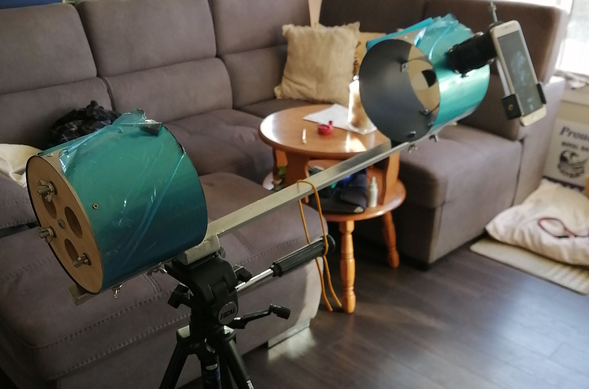
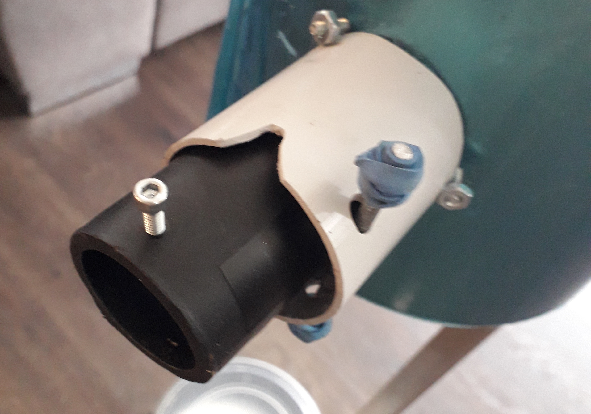
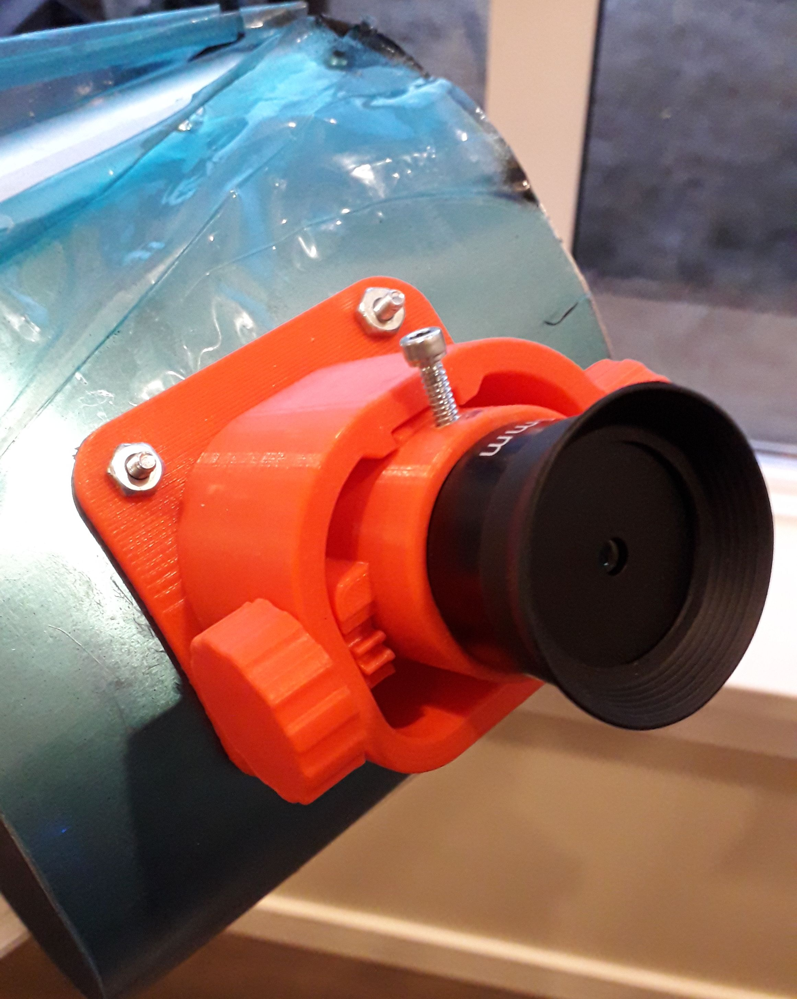
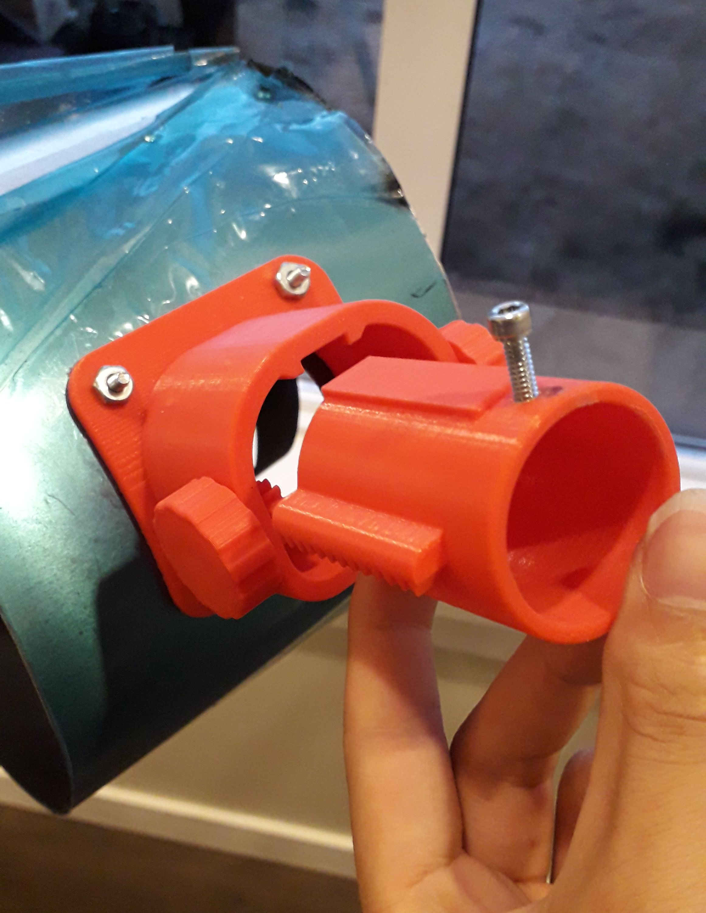

自製望遠鏡
2020-08-16

學校金工課需要想個東西來做，想說來做做望遠鏡。望遠鏡我好幾年前在吳俊輝教授的望遠鏡DIY營隊有做過，不過那次是按著已經設計好的規格把材料拼裝起來，這次我想要自己設計和計算尺寸。
因為是金工課，當然是做金屬製望遠鏡。網路上逛了逛找到了這個 Gary Seronik 做的望遠鏡。看起來蠻不錯的，所以我也用了同種設計。不過他的主鏡大小只有4 1/2"，然後我前一個望遠鏡已經是114mm口徑了，所以想做個大一點的。拿張紙算算再拿個尺比比後決定用75mm口徑，焦距150mm的主鏡。Newt for the Web 跟 Diagonal Off-Axis Illumination Calculator 在算尺寸時也很有用。
結構滿簡單的。管子部份用兩片鋁片捲起來後用鉚釘釘住，用個L型鋁棒接起來。主副鏡架參考了 Seronik 的設計，用 CNC 車床跟 3D 印表機做。

鏡面的部份由於我沒自己磨過，也沒有器材，所以從AgenaAstro買了一個GSO 6" f/5的主鏡加50mm副鏡。目鏡淘寶上買。
對焦器花了我比較多時間。本來我打算用3D印表機印一個以折疊方式來對焦的對焦器，可是印出來的結果太晃了很難用，而且轉盤的設計跟本沒辦法移動對焦。這時剛好遇到病毒流行學校關門，3D印表機也沒得用了，沒辦法印第二版。家裡也沒看到什麼能用的來做 Crayford 對焦器，到最後乾脆直接拿水管轉接頭來用，還算是可以用。

08/20 更新：
找到了一些水管來做 Crayford 對焦器，還不錯用。

2021/7/13 跟新：
自己買了台創想的 Ender-3 Pro 3D印表機，所以就花了點時間又設計了一個對焦器。模型我是用Solidworks設計，結果弄一半學校給的啟用碼過期，我連我自己花了一堆時間做的檔案都打不開。到最後我只好用遠端桌面的方式連到學校電腦完成…我覺得以後自己個人作品還是避免用這些貴得要命的產品好。
 
校准用的是眼球校對法—看起來有對齊就是有對齊。主鏡的角度用手轉幾個旋鈕就可以調整了，副鏡的弧形蜘蛛架直接用手扳到對的位子再用螺絲微調，調的時候發現副鏡座做太長了，把頂端切掉了一公分左右就差不多。
這台望遠鏡用起來還不錯。雖然我只有塑膠腳架所以東西看起來很晃，然後中間空空的部份會讓觀測受到附近光源影響，不過看土星木星月亮什麼的都滿清楚的，亮度比前一台亮，視野也比較廣。可是想拍照的話就有點麻煩了。一開始試著用網路攝影機來拍照，可是效果不太好。網路上看到有目鏡手機架這種東西，自己做了個試試還用的了。
這裡放些拍到的照片。我家光害大，加上手機不夠專業所以只有太陽系內的明亮天體。用錄影的方式來收集幾百到一兩千幀圖像，然後用 PIPP => Autostakkert => RegiStax => GIMP 來把它們疊起來、加深細節、顏色平衡等等。我目前還是菜鳥所以得出的圖還是破破的（而且相機APP的解析好像沒設成最高，連月亮都糊糊的）。不過至少看的出拍的是什麼天體。直接看是可以看到很多肉眼看不到的星星，仙女座河系淡淡的一坨看得到，不過比 Neowise 彗星還淡。
結論：自己做望遠鏡很酷很好玩，之後再看看要不要幫它做個自動追星雲台。